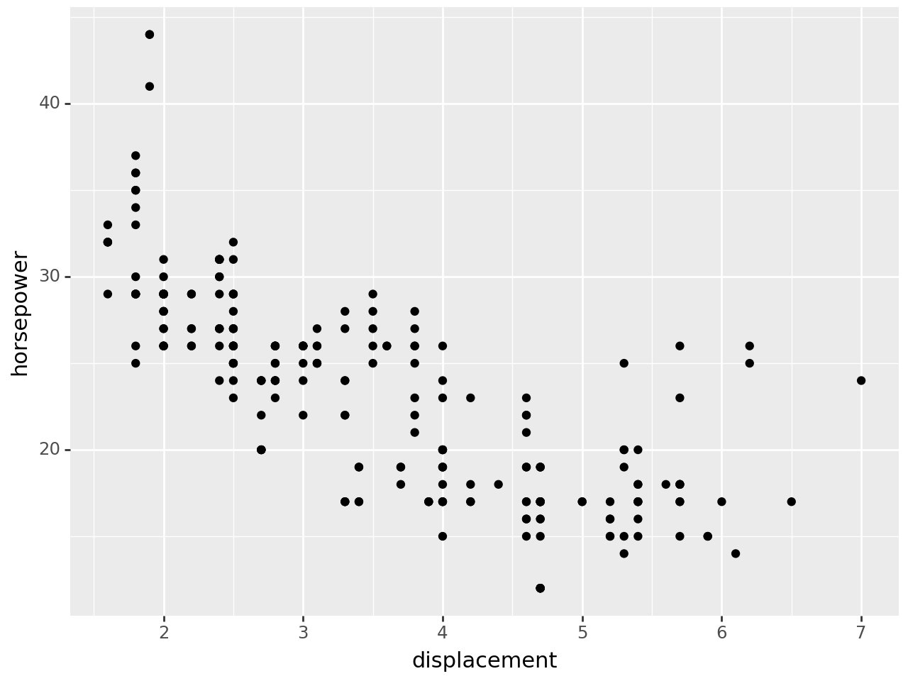
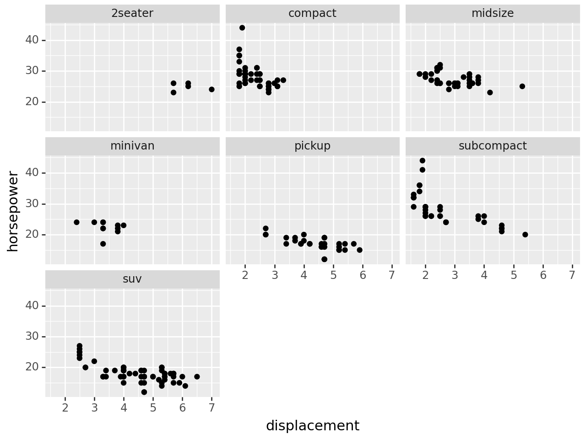
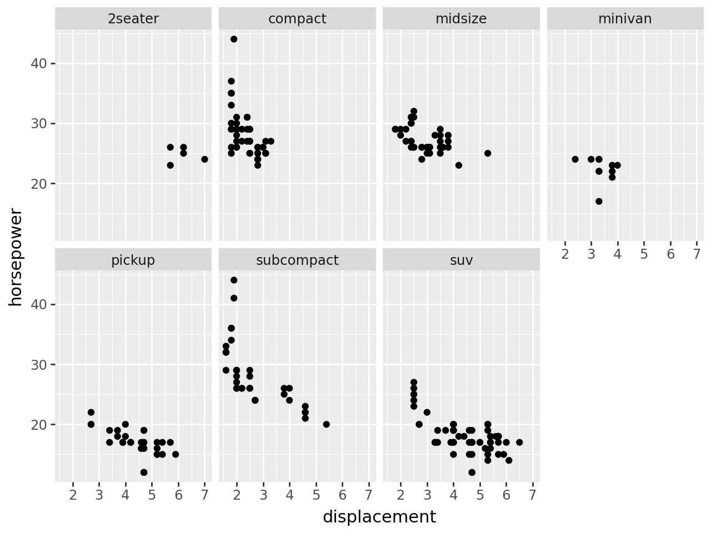
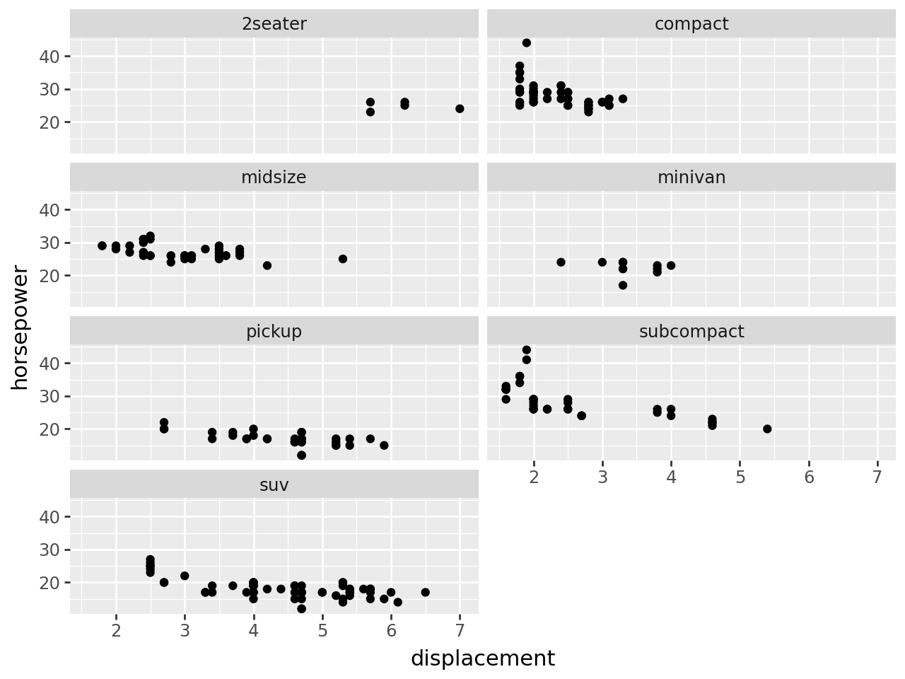
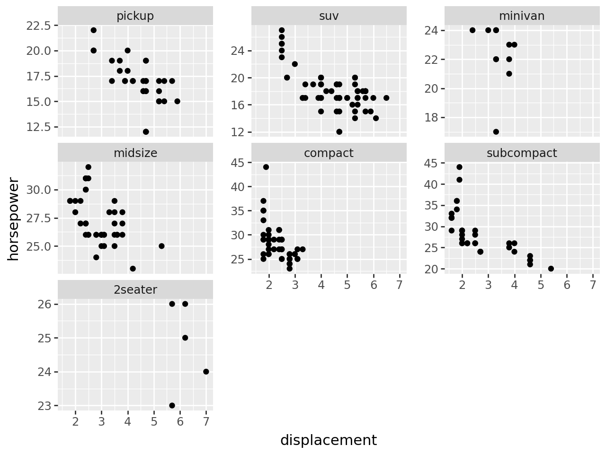
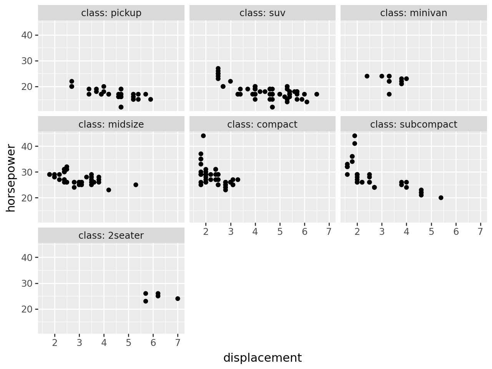

from plotnine import ggplot, aes, geom_point, labs, facet_wrap, theme
from plotnine.data import mpg
facet_wrap(
facets=None,
*,
nrow=None,
ncol=None,
scales="fixed",
shrink=True,
labeller="label_value",
as_table=True,
drop=True,
dir="h"
)Wrap 1D Panels onto 2D surface
Parameters
facets : Optional[str | Sequence[str]] = None-
Variables to groupby and plot on different panels. If a string formula is used it should be right sided, e.g
"~ a + b",("a", "b") nrow : int = None-
Number of rows
ncol : int = None-
Number of columns
scales : Literal["fixed", "free", "free_x", "free_y"] = "fixed"-
Whether
xoryscales should be allowed (free) to vary according to the data on each of the panel. shrink : bool = True-
Whether to shrink the scales to the output of the statistics instead of the raw data.
labeller : Literal["label_value", "label_both", "label_context"] = "label_value"-
How to label the facets. A string value if it should be one of
["label_value", "label_both", "label_context"]. as_table : bool = True-
If
True, the facets are laid out like a table with the highest values at the bottom-right. IfFalsethe facets are laid out like a plot with the highest value a the top-right drop : bool = True-
If
True, all factor levels not used in the data will automatically be dropped. IfFalse, all factor levels will be shown, regardless of whether or not they appear in the data. dir : Literal["h", "v"] = "h"-
Direction in which to layout the panels.
hfor horizontal andvfor vertical.
Examples
Facet wrap
facet_wrap() creates a collection of plots (facets), where each plot is differentiated by the faceting variable. These plots are wrapped into a certain number of columns or rows as specified by the user.
mpg.head()| manufacturer | model | displ | year | cyl | trans | drv | cty | hwy | fl | class | |
|---|---|---|---|---|---|---|---|---|---|---|---|
| 0 | audi | a4 | 1.8 | 1999 | 4 | auto(l5) | f | 18 | 29 | p | compact |
| 1 | audi | a4 | 1.8 | 1999 | 4 | manual(m5) | f | 21 | 29 | p | compact |
| 2 | audi | a4 | 2.0 | 2008 | 4 | manual(m6) | f | 20 | 31 | p | compact |
| 3 | audi | a4 | 2.0 | 2008 | 4 | auto(av) | f | 21 | 30 | p | compact |
| 4 | audi | a4 | 2.8 | 1999 | 6 | auto(l5) | f | 16 | 26 | p | compact |
Basic scatter plot:
(
ggplot(mpg, aes(x="displ", y="hwy"))
+ geom_point()
+ labs(x="displacement", y="horsepower")
)
Facet a discrete variable using facet_wrap():
(
ggplot(mpg, aes(x="displ", y="hwy"))
+ geom_point()
+ facet_wrap("class")
+ labs(x="displacement", y="horsepower")
)
Control the number of rows and columns with the options nrow and ncol:
# Selecting the number of columns to display
(
ggplot(mpg, aes(x="displ", y="hwy"))
+ geom_point()
+ facet_wrap(
"class",
ncol=4, # change the number of columns
)
+ labs(x="displacement", y="horsepower")
)
# Selecting the number of rows to display
(
ggplot(mpg, aes(x="displ", y="hwy"))
+ geom_point()
+ facet_wrap(
"class",
nrow=4, # change the number of columns
)
+ labs(x="displacement", y="horsepower")
)
To change the plot order of the facets, reorder the levels of the faceting variable in the data.
# re-order categories
mpg["class"] = mpg["class"].cat.reorder_categories(
["pickup", "suv", "minivan", "midsize", "compact", "subcompact", "2seater"]
)# facet plot with reorded drv category
(
ggplot(mpg, aes(x="displ", y="hwy"))
+ geom_point()
+ facet_wrap("class")
+ labs(x="displacement", y="horsepower")
)
Ordinarily the facets are arranged horizontally (left-to-right from top to bottom). However if you would prefer a vertical layout (facets are arranged top-to-bottom, from left to right) use the dir option:
# Facet plot with vertical layout
(
ggplot(mpg, aes(x="displ", y="hwy"))
+ geom_point()
+ facet_wrap(
"class",
dir="v", # change to a vertical layout
)
+ labs(x="displacement", y="horsepower")
)
You can choose if the scale of x- and y-axes are fixed or variable. Set the scales argument to free-y, free_x or free for a free scales on the y-axis, x-axis or both axes respectively. You may need to add spacing between the facets to ensure axis ticks and values are easy to read.
A fixed scale is the default and does not need to be specified.
# facet plot with free scales
(
ggplot(mpg, aes(x="displ", y="hwy"))
+ geom_point()
+ facet_wrap(
"class",
scales="free_y", # set scales so y-scale varies with the data
)
+ labs(x="displacement", y="horsepower")
)
You can add additional information to your facet labels, by using the labeller argument within the facet_wrap() command. Below we use labeller = 'label_both' to include the column name in the facet label.
# facet plot with labeller
(
ggplot(mpg, aes(x="displ", y="hwy"))
+ geom_point()
+ facet_wrap("class", labeller="label_both")
+ labs(x="displacement", y="horsepower")
)
You can add two discrete variables to a facet:
# add additional column for plotting exercise
mpg["transmission"] = mpg["trans"].map(
lambda x: "auto" if "auto" in x else "man" if "man" in x else ""
)# inspect new column transmission which identifies cars as having an automatic or manual transmission
mpg.head()| manufacturer | model | displ | year | cyl | trans | drv | cty | hwy | fl | class | transmission | |
|---|---|---|---|---|---|---|---|---|---|---|---|---|
| 0 | audi | a4 | 1.8 | 1999 | 4 | auto(l5) | f | 18 | 29 | p | compact | auto |
| 1 | audi | a4 | 1.8 | 1999 | 4 | manual(m5) | f | 21 | 29 | p | compact | man |
| 2 | audi | a4 | 2.0 | 2008 | 4 | manual(m6) | f | 20 | 31 | p | compact | man |
| 3 | audi | a4 | 2.0 | 2008 | 4 | auto(av) | f | 21 | 30 | p | compact | auto |
| 4 | audi | a4 | 2.8 | 1999 | 6 | auto(l5) | f | 16 | 26 | p | compact | auto |
# facet plot with two variables on one facet
(
ggplot(mpg, aes(x="displ", y="hwy"))
+ geom_point()
+ facet_wrap(["class", "transmission"]) # use a list to add additional facetting variables
+ labs(x="displacement", y="horsepower")
)